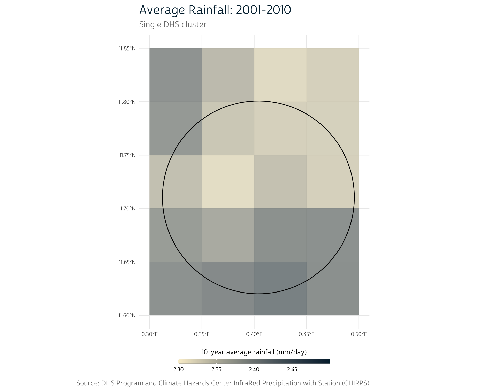

library(ipumsr)
library(dplyr)
# Load IPUMS DHS extract
dhs <- read_ipums_micro(
ddi = "data/dhs/idhs_00018.xml",
data_file = "data/dhs/idhs_00018.dat.gz",
verbose = FALSE
)
# Select a subset of variables
dhs <- dhs |>
select(SAMPLE, YEAR, IDHSPID, IDHSHID, DHSID, URBAN, HWHAZWHO)
dhs
#> # A tibble: 15,044 × 7
#> SAMPLE YEAR IDHSPID IDHSHID DHSID URBAN HWHAZWHO
#> <int+lbl> <int> <chr> <chr> <chr> <int+l> <int+lbl>
#> 1 85404 [Burkina Faso 2010] 2010 85404 … 85404 … BF20… 2 [Rur… -264
#> 2 85404 [Burkina Faso 2010] 2010 85404 … 85404 … BF20… 2 [Rur… -113
#> 3 85404 [Burkina Faso 2010] 2010 85404 … 85404 … BF20… 2 [Rur… -13
#> 4 85404 [Burkina Faso 2010] 2010 85404 … 85404 … BF20… 2 [Rur… -291
#> 5 85404 [Burkina Faso 2010] 2010 85404 … 85404 … BF20… 2 [Rur… -211
#> 6 85404 [Burkina Faso 2010] 2010 85404 … 85404 … BF20… 2 [Rur… 9999 [NIU…
#> 7 85404 [Burkina Faso 2010] 2010 85404 … 85404 … BF20… 2 [Rur… 9999 [NIU…
#> 8 85404 [Burkina Faso 2010] 2010 85404 … 85404 … BF20… 2 [Rur… -185
#> 9 85404 [Burkina Faso 2010] 2010 85404 … 85404 … BF20… 2 [Rur… 9999 [NIU…
#> 10 85404 [Burkina Faso 2010] 2010 85404 … 85404 … BF20… 2 [Rur… -88
#> # ℹ 15,034 more rowsWe know that health outcomes are significantly impacted by individuals’ environmental context: excessive rainfall can flood local infrastructure1; warmer temperatures can expand the range of common disease vectors2; and drought can decimate crop-growing regions.3 However, survey data like those from The DHS Program often provide only a limited view of the environmental trends in which individuals are embedded.
Developing a more holistic understanding of the role of environmental conditions in health outcomes therefore requires integrating external data sources with the survey data from DHS.
In this post we’ll demonstrate how to obtain raw precipitation data from the Climate Hazards Center InfraRed Precipitation with Station dataset (CHIRPS) and attach that data to survey responses from IPUMS DHS.
Outline
As a motivating example, we’ll consider whether historical precipitation rates have an effect on child stunting in Burkina Faso, measured with height-for-age Z-scores. Precipitation patterns in an area likely influence crop yields for local farms. Thus, by impairing food production, periods of low precipitation may also be related to child stunting.
The height-for-age Z-score represents the difference between the child’s height and the median height of a reference population of the same age and sex, expressed in standard deviation units.
To address this question, we will first need to gather data from several sources. In the Data sources section, we demonstrate how to obtain
- DHS survey data from IPUMS DHS.
- GPS coordinate data for DHS survey areas from The DHS Program.
- daily precipitation data for 2001-2010 from CHIRPS.
Next, in the Summarize precipitation values section, we’ll summarize the daily precipitation data in the area around each DHS survey location. To do this, we’ll
- average the daily precipitation values across the 10-year time period to produce an estimate of the average millimeters of rainfall per day.
- define a buffer region around each DHS survey location, allowing us to capture the trends in precipitation in the general vicinity of each survey location.
- aggregate the precipitation data spatially to produce a single estimate of the average daily precipitation for each DHS survey area.
Finally, in the Join data sources section, we’ll attach the aggregated precipitation values for each survey area to the DHS survey responses from that area.
Data sources
IPUMS DHS survey data
To get started, we’ll download a data file (or extract, in IPUMS terms) from IPUMS DHS and load it into R. The extract in this post contains the HWHAZWHO variable (which contains the height-for-age Z-score) along with several pre-selected variables for the 2010 Burkina Faso sample. If you need a refresher on how to download IPUMS DHS data, see the Downloading IPUMS DHS Data post.

© IPUMS (MPL-2.0)
We’ve downloaded and stored our XML codebook and compressed data file in the data/dhs directory. Be sure to update this path based on your local file setup, so you can follow along.
To simplify our output, we’ll select only a subset of the variables included in the extract:
This gives us a tabular data source containing 15,044 individual DHS survey responses for 7 variables. Of particular note is the DHSID variable (which stores the identifier for the location of the survey response).
DHS cluster coordinates
To meaningfully attach environmental data to our DHS survey responses, we’ll need to know the location where each survey response was collected. Fortunately, the DHS Program provides GPS coordinates for each surveyed household grouping, or cluster.
DHS Cluster Displacement
It’s important to note that the GPS coordinates provided by The DHS Program do not actually reflect the exact location of the clusters. In fact, the coordinates provided are randomly displaced from their true locations, such that:
- urban clusters are displaced up to 2 kilometers in any direction.
- 99% of rural clusters are displaced up to 5 kilometers in any direction.
- 1% of rural clusters are displaced up to 10 kilometers in any direction.
- displaced coordinates do not cross the country boundary and stay within the DHS survey region.
The current demonstration doesn’t require a precise location of each cluster, so we will ignore this detail. However, for more fine-grained analyses (e.g. road network analyses), you may need to take displacement into account.
See the DHS GPS data collection documentation for more details about the DHS cluster point displacement methodology.
IPUMS DHS does not yet disseminate DHS cluster coordinates directly. For now, to obtain the GPS coordinates for a specific sample, you’ll have to log into your account from The DHS Program. Specify your country of interest, and, on the line for the appropriate sample year, click the link to download the GPS coordinate data under the heading GPS Datasets. (Again, for this example, we’re using Burkina Faso’s 2010 sample.)
IPUMS DHS has recently received permission and funding to distribute DHS GPS data. Stay tuned, as these data will soon be available via IPUMS!
You’ll be presented with a new page containing a list of download links. Scroll down to the Geographic Datasets section. You have the option of downloading the file as either a shapefile (.shp) or a comma delimited file (.csv). For our purposes, we will download the shapefile, which contains spatial information in a format that can be easily interpreted by R (as well as by external GIS software).
For the Burkina Faso 2010 sample, the file should be named BFGE61FL. If you see a different file name, make sure you’re working with the correct survey year.
Vector data
Our DHS cluster coordinates are what’s known as vector data. Vector data refer to spatial data that represent geographic features using geometric shapes like points, lines, and polygons.
In R, the sf package provides an intuitive tabular framework for working with vector data. sf objects look much like a familiar tibble or data.frame, but also include an additional geometry column, which stores the spatial features that correspond to each set of observations.

© Edzer Pebesma (GPL-2 | MIT)
Installing sf
sf requires three operating system dependencies:
- GEOS for geometrical operations on projected coordinates
- PRØJ for coordinate reference system conversion and transformation
- GDAL for driver options
Make sure to follow these instructions to ensure that you set up GEOS, PRØJ, and GDAL when installing sf. The installation instructions may vary slightly, depending on your operating system. You may also need to update R, and then run install.packages("sf").
Loading cluster coordinates
Once sf is installed, we can use st_read() to load the file of GPS coordinate data we downloaded above. We’ve stored our shapefile in the data/gps directory. Again, make sure to adjust this path based on the location where you saved the file on your own system.
A shapefile is actually a collection of several files; the primary file will have the .shp extension. Other files contain relevant metadata about the geometries contained in the .shp file (for instance, projection or index information).
library(sf)
# Load the 2010 BF cluster coordinate shapefile
bf_gps <- st_read("data/gps/BFGE61FL/BFGE61FL.shp")
#> Reading layer `BFGE61FL' from data source
#> `/Users/robe2037/Documents/projects/dhs-research-hub/posts/2024-02-04-dhs-chirps/data/gps/BFGE61FL/BFGE61FL.shp'
#> using driver `ESRI Shapefile'
#> Simple feature collection with 573 features and 20 fields
#> Geometry type: POINT
#> Dimension: XY
#> Bounding box: xmin: -5.426079 ymin: 5.684342e-14 xmax: 1.957316 ymax: 14.86258
#> Geodetic CRS: WGS 84Our resulting dataset looks something like a tibble, except that it contains a header describing a simple feature collection with 573 features and 20 fields:
bf_gps
#> Simple feature collection with 573 features and 20 fields
#> Geometry type: POINT
#> Dimension: XY
#> Bounding box: xmin: -5.426079 ymin: 5.684342e-14 xmax: 1.957316 ymax: 14.86258
#> Geodetic CRS: WGS 84
#> First 10 features:
#> DHSID DHSCC DHSYEAR DHSCLUST CCFIPS ADM1FIPS ADM1FIPSNA ADM1SALBNA
#> 1 BF201000000001 BF 2010 1 UV NULL NULL NULL
#> 2 BF201000000002 BF 2010 2 UV NULL NULL NULL
#> 3 BF201000000003 BF 2010 3 UV NULL NULL NULL
#> 4 BF201000000004 BF 2010 4 UV NULL NULL NULL
#> 5 BF201000000005 BF 2010 5 UV NULL NULL NULL
#> 6 BF201000000006 BF 2010 6 UV NULL NULL NULL
#> 7 BF201000000007 BF 2010 7 UV NULL NULL NULL
#> 8 BF201000000008 BF 2010 8 UV NULL NULL NULL
#> 9 BF201000000009 BF 2010 9 UV NULL NULL NULL
#> 10 BF201000000010 BF 2010 10 UV NULL NULL NULL
#> ADM1SALBCO ADM1DHS ADM1NAME DHSREGCO DHSREGNA SOURCE URBAN_RURA
#> 1 NULL 9999 NULL 13 Sud-Ouest GPS R
#> 2 NULL 9999 NULL 2 Cascades GPS R
#> 3 NULL 9999 NULL 13 Sud-Ouest GAZ U
#> 4 NULL 9999 NULL 10 Nord GPS R
#> 5 NULL 9999 NULL 1 Boucle de Mouhoun GPS R
#> 6 NULL 9999 NULL 6 Centre-Ouest GPS R
#> 7 NULL 9999 NULL 12 Sahel GPS R
#> 8 NULL 9999 NULL 3 Centre GPS U
#> 9 NULL 9999 NULL 4 Centre-Est GPS U
#> 10 NULL 9999 NULL 5 Centre-Nord GAZ R
#> LATNUM LONGNUM ALT_GPS ALT_DEM DATUM geometry
#> 1 10.109415 -2.807555 269 269 WGS84 POINT (-2.807555 10.10942)
#> 2 10.388513 -3.907798 367 362 WGS84 POINT (-3.907798 10.38851)
#> 3 9.882864 -2.925703 9999 308 WGS84 POINT (-2.925703 9.882864)
#> 4 13.573418 -2.163120 323 323 WGS84 POINT (-2.16312 13.57342)
#> 5 12.453299 -3.461899 301 298 WGS84 POINT (-3.461899 12.4533)
#> 6 12.045308 -2.083828 338 325 WGS84 POINT (-2.083828 12.04531)
#> 7 14.354198 -0.672096 328 328 WGS84 POINT (-0.672096 14.3542)
#> 8 12.311034 -1.562071 322 324 WGS84 POINT (-1.562071 12.31103)
#> 9 11.780763 -0.363904 317 304 WGS84 POINT (-0.363904 11.78076)
#> 10 13.225114 -1.337994 9999 343 WGS84 POINT (-1.337994 13.22511)Each feature corresponds to one cluster location for which we have GPS coordinates, and each field represents a variable measured for each cluster. At the end of the output, you’ll also notice the aforementioned geometry column that contains the latitude and longitude for each displaced cluster location.
Some clusters contain unverified coordinates and have been assigned a location of (0, 0). Since we have no way of linking these clusters to environmental data, we will remove them for this analysis using dplyr’s filter() function:
# Remove empty geographies
bf_gps <- bf_gps |>
filter(LATNUM != 0, LONGNUM != 0)Visualizing spatial data
It’s always worth double-checking that spatial data are being processed as expected, and this is often most easily done visually. We’ll use the ggspatial package to visualize our spatial data. This package is a convenient extension of the popular ggplot2 package.

© RStudio, Inc. (MIT)
As with ggplot2, ggspatial allows us to think of our plot in layers. The primary difference is that ggspatial’s layer_spatial() automatically maps the plot’s x and y dimensions to the geographic coordinates in the data.
ggplot2 and Themes
This post isn’t intended to be an introduction to ggplot2, so don’t worry if some of the plot code is unfamiliar to you—you should still be able to follow along with the other content in the post.
Also, we’ve modified some of the default theme elements for use in our plots throughout this post. We won’t cover all the details here, but note that your plots will likely look a bit different if you’re following along. For more about themes, see the associated documentation.
To add some context to our map, we’ll load a shapefile containing the Burkina Faso administrative borders. We’ll use the integrated geographies provided by IPUMS, which can be downloaded by clicking the shapefile link under the Burkina Faso section of this table. We’ve placed this shapefile alongside our DHS coordinate data in our data/gps directory, and can load it with st_read(), as we did before:
# Load administrative boundary shapefile
bf_borders <- st_read(
"data/gps/geo_bf2003_2010/geo_bf2003_2010.shp",
quiet = TRUE
)Now, we can plot the cluster locations (stored in bf_gps) along with the Burkina Faso administrative boundaries (stored in bf_borders):
library(ggplot2)
library(ggspatial)
# Create map with cluster locations and BF boundaries
ggplot() +
layer_spatial(bf_borders, fill = NA) +
layer_spatial(bf_gps, size = 2, alpha = 0.4) +
labs(
title = "Approximate DHS Cluster Locations",
subtitle = "Burkina Faso: 2010",
caption = "Source: DHS Program"
) +
annotation_scale(
aes(style = "ticks", location = "br"),
text_col = "#999999",
line_col = "#999999"
)
So far, everything seems to be working as expected—all the cluster points fall within the national borders, and there are noticeably more points in known urban areas, like the capital region of Ouagadougou. We should be safe to continue and load our precipitation data.
CHIRPS precipitation data
For this post, we will use precipitation data from CHIRPS, a quasi-global gridded rainfall time eries with data from 1981 to the near-present.5 CHIRPS is frequently used in health, agricultural, and hydrological research because of its relatively high spatial and temporal resolution, and validation studies have shown it to perform better than other leading precipitation models across several metrics.6,7
Importantly, the CHIRPS data are provided as raster data, not vector data. Instead of representing precipitation with a set of polygons or points (as with vector data), raster data represent geographic features in a grid, where each cell in the grid is associated with a particular value. In our case, each cell is associated with a single daily precipitation value (in millimeters).

sf doesn’t provide support for raster data—instead, we’ll turn to the terra package.
Raster data
terra has rapidly become the go-to R package for working with raster data, and it is set to supersede the raster package, which was formerly used for raster operations.

© Robert J. Hijmans et al. (GPL >=3)
In most cases, terra provides much faster processing than does the raster package. The magic behind terra is that it avoids reading many raster images into R at once. Instead, it reads metadata about each image—information about its spatial extent, coordinate reference system, pixel count, and so on.
raster Package Retirement
At the time of writing, the raster package is still available on CRAN, but it will be retired soon. You may see other resources referencing the raster package, but we suggest relying only on terra to ensure that your code is robust to the upcoming retirement.
Installing terra
You’ll need the same operating system dependencies required for sf to use terra to its full potential. If you’ve already got those set up for sf, it should be easy to install terra with install.packages("terra"). If not, follow these instructions to set up the package.
Loading CHIRPS data
The complete CHIRPS precipitation data series can be downloaded directly from the UCSB Climate Hazards Center. However, because storing global data can require significant space, most users will likely want to download data for a specific area of interest.
There are two primary ways to go about downloading CHIRPS data for a particular area:
- Select data interactively through the CHIRPS API provider: ClimateSERV. ClimateSERV hosts a graphical user interface (GUI) that allows you to select an area of interest on a map.
- Access data through the CHIRPS API using the API client tools provided by the chirps package.
The first option has the advantage of being visual and intuitive. However, if you need to update your data for a new area or time range, you’ll have to go through the manual download process again.
In contrast, the second option prioritizes reproducibility and adaptability: updating the data used in your analysis is a matter of adjusting just a few lines of code. However, your R session will be occupied while downloading data, which can take a fair amount of time for long time series.
Option 1: ClimateSERV
First, navigate to the ClimateSERV Map. From there, open the Statistical Query toolbar on the top of the left sidebar and click Select. Click Country under the Select features by dropdown. Then, click on the country of interest—in this case, Burkina Faso (in West Africa).
Warning
The ClimateSERV interface may not work properly on all web browsers (e.g. Firefox). If you have difficulty, try opening the interface in a different browser.

Once you’ve indicated the country of interest, change the type of request to Download Raw Data and the download format to TIF. Finally, adjust the date range to start on 01/01/2001 and end on 12/31/2010. This will give us a 10-year range running up to the survey year, allowing us to calculate a long-run average.
Finally, click Submit Query to download the daily rainfall totals. Note that downloading this much data may take a fair amount of time!
Once your request has been processed, you’ll receive a compressed (.zip) folder containing one TIF image for each day in the time span: that’s 3652 files containing many megabytes of raster data. We’ve placed the .zip file in the data directory and renamed it chirps.zip. You can unzip the file in R with unzip():
# Unzip and place individual .tif files in a new `data/chirps` directory
chirps_files <- unzip("data/chirps.zip", exdir = "data/chirps")Or, if you prefer to unzip the file manually, you can do so and then list the individual raster files with list.files():
# Create list of paths to all individual raster files
chirps_files <- list.files("data/chirps", full.names = TRUE)We can load raster files with the rast() function from terra. When providing multiple files, terra will stack them so each input file becomes a single layer in a larger raster stack:
Option 2: The chirps package
We can use the get_chirps() function from the chirps package to access CHIRPS data via the CHIRPS API. Since we don’t have a map where we can select our region of interest, we’ll have to provide a pre-loaded region representing the area for which we’d like data.
We can use the bf_borders object we created earlier to get data for the Burkina Faso region. We’ll use vect() to convert it to a SpatVector from terra (get_chirps() currently has more robust support for these objects). We’ll also input our desired date range for which to obtain data:
The SpatVector is the main object terra uses to represent vector data. We’ve already shown how to use sf to handle vector data, but terra also provides support for this data model. In general, we find that sf’s vector objects are a little more intuitive, but there are some cases where using terra may make certain operations easier or faster.
# Load the chirps package
library(chirps)
# Get CHIRPS data from 2001-2010 for Burkina Faso
bf_precip <- get_chirps(
vect(bf_borders),
dates = c("2001-01-01","2010-12-31"),
server = "CHC" # Recommended when obtaining data for multiple dates and/or locations
)get_chirps() obtains data for a rectangular region around the country. For consistency with the results you would get from ClimateSERV (which only downloads data within the country borders), we’ll use terra’s mask() function to remove data from outside the Burkina Faso borders:
bf_precip <- mask(bf_precip, bf_borders, touches = FALSE)
ClimateSERV vs. chirps
There may be some trivial discrepancies between the data obtained via ClimateSERV and those obtained via the chirps package. When creating this post, we used data obtained via ClimateSERV.
If you instead obtained data from chirps, your values may differ slightly from those we present below. These differences shouldn’t meaningfully affect any of the operations we demonstrate.
SpatRaster objects
Regardless of the method you chose to access the CHIRPS data, you should now have a SpatRaster object from terra containing the raster stack of precipitation data covering the entirety of Burkina Faso from 2001 to 2010:
bf_precip
#> class : SpatRaster
#> dimensions : 115, 159, 3652 (nrow, ncol, nlyr)
#> resolution : 0.05, 0.05 (x, y)
#> extent : -5.549997, 2.400003, 9.349999, 15.1 (xmin, xmax, ymin, ymax)
#> coord. ref. : lon/lat WGS 84 (EPSG:4326)
#> sources : 20010101.tif
#> 20010102.tif
#> 20010103.tif
#> ... and 3649 more sources
#> names : 20010101, 20010102, 20010103, 20010104, 20010105, 20010106, ...As you can see, this raster layer contains 115 rows and 159 columns of pixels. The value in each pixel represents the rainfall (in millimeters) for an area 0.05 degrees longitude by 0.05 degrees latitude (shown in the resolution field).
Each of the 3652 layers in the SpatRaster represents the CHIRPS precipitation values for a single day of the 10-year period between 2001 and 2010.
To better understand this structure, we can visualize the rainfall patterns for one of these days. We’ll first need to select an individual layer from the raster stack. We can index layers by name or layer position using [[ notation:
# Select a single layer
# (Layer names will vary depending on how you obtained your CHIRPS data)
precip_day <- bf_precip[["20010719"]]Once we’ve selected a layer, we can use layer_spatial() to plot it, just as we did for vector objects.
Show plot code
# Create map of rainfall for single day
ggplot() +
layer_spatial(
precip_day,
alpha = if_else(values(precip_day) == 0, 0, 0.8),
na.rm = TRUE
) +
layer_spatial(bf_borders, fill = NA, color = "#888888") +
layer_spatial(bf_gps, fill = NA, size = 2, alpha = 0.4) +
labs(
title = "Burkina Faso Rainfall: July 19, 2001",
subtitle = "CHIRPS precipitation data with DHS cluster locations",
fill = "Rainfall total (mm)",
caption = "Source: DHS Program and Climate Hazards Center InfraRed Precipitation with Station (CHIRPS)"
) +
annotation_scale(
aes(style = "ticks", location = "br"),
text_col = "#999999",
line_col = "#999999"
) +
scale_fill_gradient(low = "white", high = "#00263A", na.value = NA)
It can be unwieldy to manage many layers of raster data. In the next section, we’ll introduce methods for simplifying these data across both time and space so they can be more easily attached to our DHS survey.
Summarize precipitation values
The terra package contains several summary methods we can use to quickly explore summary statistics across all of the layers included in our multi-year timespan. For example, mean() computes the mean daily precipitation value for each pixel location across all layers (days) of our CHIRPS data:
# Calculate mean daily precipitation value for each pixel (mm/day)
bf_precip_mean <- mean(bf_precip)
bf_precip_mean
#> class : SpatRaster
#> dimensions : 115, 159, 1 (nrow, ncol, nlyr)
#> resolution : 0.05, 0.05 (x, y)
#> extent : -5.549997, 2.400003, 9.349999, 15.1 (xmin, xmax, ymin, ymax)
#> coord. ref. : lon/lat WGS 84 (EPSG:4326)
#> source(s) : memory
#> name : mean
#> min value : 0.8771938
#> max value : 3.1498873Notice that this produces another SpatRaster and that the result only has one layer. This makes sense, because mean() uses all of the input raster layers to produce a single average precipitation (in millimeters per day) for each cell.
Since mean() produces another SpatRaster, we can plot the average values for the 10-year time span just as we did with a single day’s worth of precipitation data:
Show plot code
ggplot() +
layer_spatial(bf_precip_mean, alpha = 0.8, na.rm = TRUE) +
layer_spatial(bf_borders, alpha = 0) +
labs(
title = "Burkina Faso Average Rainfall: 2001-2010",
subtitle = "CHIRPS precipitation data",
fill = "10-year average rainfall (mm/day)",
caption = "Source: Climate Hazards Center InfraRed Precipitation with Station (CHIRPS)"
) +
annotation_scale(
aes(style = "ticks", location = "br"),
text_col = "#999999",
line_col = "#999999"
) +
scale_fill_gradient(low = "#FAEFD1", high = "#00263A", na.value = NA)
At this point, our primary data sources still remain completely independent. We know the approximate location of the DHS clusters, and we have a summary of the average daily precipitation across Burkina Faso, but we haven’t linked the two together to create a specific precipitation record for each cluster.
Our remaining task is to extract the mean precipitation values from the CHIRPS raster at each of the DHS cluster locations.
Cluster buffers
We might think it logical to extract the mean precipitation values at each cluster’s point location. However, recall that our motivating question centered around the idea that precipitation influences health by way of impacting local crop yields. The farms that serve the population of a given cluster won’t necessarily be situated right at the recorded cluster location. Furthermore, each farm is probably impacted by the precipitation patterns in its surrounding area, not only those that occur at its exact location.
With this in mind, it makes sense to generate a summary metric of the precipitation in the general area of each cluster, rather than at the cluster point locations. We can accomplish this by creating buffer zones around each cluster coordinate.
We can use st_buffer() to create an appropriately sized buffer zone around the displaced GPS coordinates for each cluster. However, sf’s geometrical operations (powered by GEOS) assume that the input data are in meters, and our data are currently in degrees.
Therefore, we first need to project our GPS coordinates into a new coordinate reference system, or CRS. We will use the UTM Coordinate System Zone 30N for our projection, which provides limited distortion for Burkina Faso. The EPSG code for this UTM zone is 32630, which we can provide to st_transform() to project our data:
Map projections constitute an entire topic on their own. To learn more about projected coordinate systems, there are countless resources online, like this treatment from ESRI
# Project cluster locations to the UTM 30N reference system
bf_gps <- st_transform(bf_gps, crs = 32630)We can use st_geometry() to see a summary of our sf object’s geometry. Note that the Projected CRS now shows UTM zone 30N, and that our data are now stored in meters, rather than degrees:
st_geometry(bf_gps)
#> Geometry set for 541 features
#> Geometry type: POINT
#> Dimension: XY
#> Bounding box: xmin: 234659.3 ymin: 1092462 xmax: 1039190 ymax: 1645174
#> Projected CRS: WGS 84 / UTM zone 30N
#> First 5 geometries:
#> POINT (521084.1 1117516)
#> POINT (400626 1148510)
#> POINT (508145.5 1092462)
#> POINT (590542.4 1500704)
#> POINT (449803.2 1376723)If you need to check your work, you can always access the current CRS of your data with st_crs().
Now that we’re working in meters, we can buffer our points using st_buffer(). The appropriate buffer distance will depend on your specific research question of interest. For this demonstration, we’ll create a 10-kilometer (10,000 meter) buffer by setting dist = 10000:
bf_gps <- st_buffer(bf_gps, dist = 10000)We see that the geometry column now describes POLYGON geometries rather than POINT geometries. Each polygon is defined by a series of points that form the circumference of the buffer zone.
st_geometry(bf_gps)
#> Geometry set for 541 features
#> Geometry type: POLYGON
#> Dimension: XY
#> Bounding box: xmin: 224659.3 ymin: 1082462 xmax: 1049190 ymax: 1655174
#> Projected CRS: WGS 84 / UTM zone 30N
#> First 5 geometries:
#> POLYGON ((531084.1 1117516, 531070.3 1116993, 5...
#> POLYGON ((410626 1148510, 410612.3 1147987, 410...
#> POLYGON ((518145.5 1092462, 518131.8 1091939, 5...
#> POLYGON ((600542.4 1500704, 600528.7 1500181, 6...
#> POLYGON ((459803.2 1376723, 459789.5 1376200, 4...We’re finished measuring distance in meters, so we’ll again use st_transform() to revert back to degrees of latitude and longitude (EPSG 4326) for consistency with our other maps.
bf_gps <- st_transform(bf_gps, crs = 4326)Show plot code
ggplot() +
layer_spatial(bf_borders, fill = NA) +
layer_spatial(bf_gps, fill = "black", alpha = 0.2) +
labs(
title = "Buffered DHS Cluster Locations",
subtitle = "Burkina Faso: 2010",
caption = "Source: DHS Program"
) +
annotation_scale(
aes(style = "ticks", location = "br"),
text_col = "#999999",
line_col = "#999999"
)
Handling cluster displacement
Previously, we discussed the fact that the cluster coordinates provided by The DHS Program are displaced from their true locations. While we don’t need to address this for our precipitation data, there may be other cases where it is useful to obtain a more precise location for each cluster (for instance, if working with road networks or other fine-grained data).
In these cases, you can certainly buffer points conditionally on other values in the data by providing a conditional statement to the buffer dist argument. For instance, to buffer urban clusters (URBAN_RURA == "U") by 2000 meters and other clusters by 5000 meters, use an if_else() statement:
Aggregating rainfall within cluster regions
Now that we have buffered cluster regions, we can focus on combining our two data sources. Let’s zoom in on a single cluster as an example. We’ll use the cluster with DHSCLUST number 160:
clust <- bf_gps |>
filter(DHSCLUST == 160)To simplify this example, we’ll use terra’s crop() to restrict our raster to the cells surrounding this cluster:
precip_clust <- crop(bf_precip_mean, clust, snap = "out")Show plot code
ggplot() +
layer_spatial(precip_clust, alpha = 0.8) +
layer_spatial(clust, alpha = 0, linewidth = 0.5, color = "black") +
labs(
title = "Average Rainfall: 2001-2010",
subtitle = "Single DHS cluster",
fill = "10-year average rainfall (mm/day)",
caption = "Source: DHS Program and Climate Hazards Center InfraRed Precipitation with Station (CHIRPS)"
) +
scale_fill_gradient(
low = "#FAEFD1",
high = "#00263A",
na.value = NA,
limits = c(2.3, 2.5)
)
For demonstration purposes, we’ve used different limits for the color scale in this plot and the next. In general, we’d want to ensure that the colors in this plot map to the same values used in other plots with the same color scheme.
We see a range of rainfall totals across the 20 pixels in this area. How can we summarize the information contained in these individual pixels into a single estimate of the rainfall for this buffered cluster region?
The most straightforward approach might be to take the mean of all the pixel values that overlap our buffer region. First, we need to obtain the values of the overlapping raster cells. We can use terra’s extract() to obtain the raster cell values from the region defined by an overlapping vector data source (in this case, our example cluster, clust):
extract(bf_precip_mean, clust)
#> ID mean
#> 1 1 2.337887
#> 2 1 2.329431
#> 3 1 2.344792
#> 4 1 2.317271
#> 5 1 2.343546
#> 6 1 2.329051
#> 7 1 2.381871
#> 8 1 2.367312
#> 9 1 2.395538
#> 10 1 2.395361
#> 11 1 2.402505
#> 12 1 2.415130Note that this provides mean daily precipitation values for 12 different cells. By default, extract() will only extract values from the cells whose center point lies within the overlaid polygon:
Show plot code
# New SpatRaster with same extent as bf_precip_mean, but with empty values
ext_cells <- rast(bf_precip_mean, vals = NA)
# ID cell locations for each cell that is extracted
cell_idx <- extract(ext_cells, clust, cells = TRUE)$cell
ext_cells[cell_idx] <- bf_precip_mean[cell_idx]
ggplot() +
layer_spatial(
crop(ext_cells, clust, snap = "out"),
alpha = 0.8,
na.rm = TRUE
) +
layer_spatial(clust, alpha = 0, linewidth = 0.5, color = "black") +
labs(
title = "Average Rainfall: 2001-2010",
subtitle = "Single DHS cluster",
fill = "10-year average rainfall (mm/day)",
caption = "Source: DHS Program and Climate Hazards Center InfraRed Precipitation with Station (CHIRPS)"
) +
scale_fill_gradient(
low = "#FAEFD1",
high = "#00263A",
na.value = NA,
limits = c(2.3, 2.5)
)
To instead include all cells that intersect the polygon, set touches = TRUE:
clust_precip <- extract(bf_precip_mean, clust, touches = TRUE)
clust_precip
#> ID mean
#> 1 1 2.350189
#> 2 1 2.319925
#> 3 1 2.385132
#> 4 1 2.337887
#> 5 1 2.329431
#> 6 1 2.328763
#> 7 1 2.344792
#> 8 1 2.317271
#> 9 1 2.343546
#> 10 1 2.329051
#> 11 1 2.381871
#> 12 1 2.367312
#> 13 1 2.395538
#> 14 1 2.395361
#> 15 1 2.393321
#> 16 1 2.402505
#> 17 1 2.415130
#> 18 1 2.395817This operation provides the mean daily precipitation values for each of the 18 cells that intersect our cluster region. However, some cells cover a much larger portion of the cluster region than others. To account for the heterogeneity in size, we can set weights = TRUE to include a weight column, which records the proportion of each cell that is covered by the polygon:
weights = TRUE automatically includes all intersected cells, but those with negligible weights will be removed.
clust_precip <- extract(bf_precip_mean, clust, weights = TRUE)
clust_precip
#> ID mean weight
#> 1 1 2.385132 0.20
#> 2 1 2.337887 0.90
#> 3 1 2.329431 0.94
#> 4 1 2.328763 0.33
#> 5 1 2.344792 0.70
#> 6 1 2.317271 1.00
#> 7 1 2.343546 1.00
#> 8 1 2.329051 0.86
#> 9 1 2.381871 0.57
#> 10 1 2.367312 1.00
#> 11 1 2.395538 1.00
#> 12 1 2.395361 0.74
#> 13 1 2.393321 0.03
#> 14 1 2.402505 0.47
#> 15 1 2.415130 0.53
#> 16 1 2.395817 0.09We can then provide the weights to the weighted.mean() function to calculate a weighted mean that is shifted toward the cell values that form a larger proportion of the polygon area.
weighted.mean(clust_precip$mean, clust_precip$weight)
#> [1] 2.358508Because this kind of workflow is so common, terra provides a quicker shorthand in extract(). You can use the fun argument to specify an aggregation function at the same time that you extract the raster cell values:
# Extract area-weighted average for all cells covered by `clust`
extract(
bf_precip_mean,
clust,
fun = "mean", # Average all extracted values
weights = TRUE # Use area weights
)
#> ID mean
#> 1 1 2.358508The 2.358508 value represents the area-weighted mean of the 10-year mean precipitation values (in millimeters per day) within the given cluster region.
Scaling up for all clusters
To aggregate the rainfall data for each DHS cluster in the sample, we simply scale up. We again use extract(), but we provide our raster of precipitation values for the entire country and the polygons for all of our buffered clusters.
# Average the mean CHIRPS values within each DHS cluster
clust_means <- extract(
bf_precip_mean,
bf_gps, # All clusters included
fun = "mean",
weights = TRUE,
na.rm = TRUE, # Ignore missing CHIRPS values
bind = TRUE # Recombine with original `bf_gps` data
)By setting bind = TRUE, we can automatically recombine the extracted means with the other cluster data in bf_gps.
We also set na.rm = TRUE to ensure we don’t get missing values for clusters whose regions expand beyond the country borders (where we haven’t downloaded any CHIRPS data). This decision may be reasonable if our interest is in rainfall over local crop-producing regions, and we don’t believe that clusters in border regions obtain substantial inputs from farms outside of the country. (If we wanted to include the rainfall outside of the country borders, we would simply need to expand our bounding box when downloading our CHIRPS data.)
Finally, we’ll convert our cluster means back to an sf object. Notice that there now exists a mean column that stores the weighted mean values for each cluster:
# Convert to sf object
clust_means <- st_as_sf(clust_means)
clust_means |>
select(DHSID, mean, geometry)
#> Simple feature collection with 541 features and 2 fields
#> Geometry type: POLYGON
#> Dimension: XY
#> Bounding box: xmin: -5.517451 ymin: 9.792417 xmax: 2.049008 ymax: 14.95288
#> Geodetic CRS: WGS 84
#> First 10 features:
#> DHSID mean geometry
#> 1 BF201000000001 2.758146 POLYGON ((-2.71628 10.10935...
#> 2 BF201000000002 2.782180 POLYGON ((-3.816453 10.3887...
#> 3 BF201000000003 3.004422 POLYGON ((-2.834491 9.88283...
#> 4 BF201000000004 1.678181 POLYGON ((-2.070699 13.5730...
#> 5 BF201000000005 2.129466 POLYGON ((-3.369883 12.4534...
#> 6 BF201000000006 2.203529 POLYGON ((-1.991964 12.0449...
#> 7 BF201000000007 1.113443 POLYGON ((-0.579432 14.3532...
#> 8 BF201000000008 2.110246 POLYGON ((-1.470133 12.3105...
#> 9 BF201000000009 2.281224 POLYGON ((-0.2722169 11.779...
#> 10 BF201000000010 1.722371 POLYGON ((-1.245736 13.2245...Now that we have aggregated rainfall across all clusters, we can plot the average rainfall for each of the 10-kilometer buffered cluster regions. Each cluster region is associated with a single 10-year average rainfall value.
Show plot code
ggplot() +
layer_spatial(bf_borders, fill = NA) +
layer_spatial(clust_means, aes(fill = mean), alpha = 0.8) +
labs(
title = "Average Rainfall within Clusters: 2001-2010",
subtitle = "Burkina Faso: 2010 Clusters",
fill = "10-year average rainfall (mm/day)",
caption = "Source: DHS Program and Climate Hazards Center InfraRed Precipitation with Station (CHIRPS)"
) +
annotation_scale(
aes(style = "ticks", location = "br"),
text_col = "#999999",
line_col = "#999999"
) +
scale_fill_steps(low = "#FAEFD1", high = "#00263A", n.breaks = 4) +
theme(legend.ticks = element_blank())
Join data sources
At this point, we have our aggregated CHIRPS data merged with our DHS clusters, but not with the individual DHS survey responses.
To accomplish this last task, we need to merge the cluster means with the survey responses, based on the cluster where each response was recorded. This information is stored in the DHSID variable provided by IPUMS DHS.
We’ll use dplyr’s right_join() to merge the survey responses with the mean precipitation values for each cluster, matching records using their DHSID code. Using right_join() ensures that responses from clusters with no location information (which have been filtered out of clust_means) are not included in the output.
# Join survey responses and cluster precipitation values, based on
# the cluster where each response was recorded (DHSID)
dhs_chirps <- right_join(
dhs,
st_drop_geometry(clust_means), # remove geometry for simplicity in output
by = "DHSID"
)Now we can finally link the 10-year mean precipitation value to each sample participant’s outcomes. To demonstrate, we clean up the HWHAZWHO variable and visualize the relationship between 10-year average precipitation and childrens’ height-for-age in Z-scores:
ipumsr includes helper functions to view the metadata for IPUMS variables. For instance, ipums_val_labels() can show us the missing value codes for a given variable, which we can use when cleaning our data.
# Clean up HWHAZWHO for plotting
dhs_chirps_recode <- dhs_chirps |>
filter(HWHAZWHO < 9995) |> # Remove missing HWHAZWHO values
mutate(HWHAZWHO = HWHAZWHO / 100) # Recode decimal place based on IPUMS documentation
# Create scatterplot of mean precipitation value vs. HWHAZWHO
ggplot() +
geom_point(
aes(x = mean, y = HWHAZWHO, fill = mean),
data = dhs_chirps_recode,
color = "#999999",
shape = 21,
size = 2,
alpha = 0.8
) +
labs(
title = "Average Rainfall and Stunting",
subtitle = "Burkina Faso: 2010 Clusters",
x = "10-year average rainfall (mm/day)",
y = "Height for Age Z-Score",
fill = "10-year average rainfall (mm/day)",
caption = "Source: IPUMS DHS, DHS Program, and Climate Hazards Center InfraRed Precipitation with Station (CHIRPS)"
) +
scale_fill_gradient(low = "#FAEFD1", high = "#00263A", na.value = NA) +
theme(legend.position = "none")
Since our rainfall metric is now linked to each individual’s survey response, we can include average rainfall as a predictor when analyzing the health outcomes provided by IPUMS DHS.
Final thoughts
This post has introduced several core concepts for including spatial data in an analysis, including:
- the distinction between vector and raster data
- the main packages (sf and terra) used for working with spatial data in R
- methods for summarizing longitudinal spatial data across time
- spatial buffering and methods for aggregating raster values within polygons
- the importance of considering the geographic context of spatial data when deciding the most appropriate way to include such data in an analysis
That being said, many of the techniques we introduced will be too simplistic for most analyses.
For instance, a single long-run average is unlikely to capture much nuance in the way precipitation influences nutrition. Instead, it might be more meaningful to determine precipitation patterns at the points in the growing season when crops are most vulnerable. Or we could investigate local environmental conditions only for time periods surrounding each child’s birth.
Furthermore, our CHIRPS data span until the end of 2010, but the health interview responses come from before the end of 2010, meaning that some of our rainfall data can’t possibly be causally linked to the health responses.
Using geographic data therefore requires careful planning and thought. Nonetheless, the workflow and methods introduced in this post should give you a solid foundation from which to start thinking about how to integrate spatial data into analyses of IPUMS DHS data.
Getting Help
Questions or comments? Check out the IPUMS User Forum or reach out to IPUMS User Support at ipums@umn.edu.
References
1. Mirza, M. M. Q. (2011). Climate change, flooding in South Asia and implications. Regional Environmental Change, 11, 95–107. https://doi.org/10.1007/S10113-010-0184-7
2. Martens, W. J. M., Jetten, T. H., & Focks, D. A. (1997). Sensitivity of malaria, schistosomiasis and dengue to global warming. Climatic Change, 35, 145–156. https://doi.org/10.1023/A:1005365413932
3. Lesk, C., Rowhani, P., & Ramankutty, N. (2016). Influence of extreme weather disasters on global crop production. Nature, 529, 84–87. https://doi.org/10.1038/nature16467
4. Minn, M. (n.d.). Points vs. lines vs. polygons. https://michaelminn.net/tutorials/arcgis-pro-terrain/
5. Funk, C., Peterson, P., Landsfeld, M., Pedreros, D., Verdin, J., Shukla, S., Husak, G., Rowland, J., Harrison, L., Hoell, A., & Michaelsen, J. (2015). The climate hazards infrared precipitation with stations—a new environmental record for monitoring extremes. Scientific Data, 2, 1–21. https://doi.org/10.1038/sdata.2015.66
6. Peña-Guerrero, M. D., Umirbekov, A., Tarasova, L., & Müller, D. (2022). Comparing the performance of high-resolution global precipitation products across topographic and climatic gradients of Central Asia. International Journal of Climatology, 42, 5554–5569. https://doi.org/10.1002/JOC.7548
7. Pyarali, K., Peng, J., Disse, M., & Tuo, Y. (2022). Development and application of high resolution SPEI drought dataset for Central Asia. Scientific Data, 9, 1–14. https://doi.org/10.1038/s41597-022-01279-5